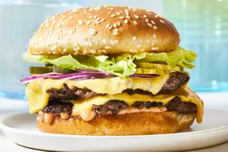

Smash Burger

Description
They're minced beef and salt, smashed flat over a searingly hot flat-grill until you get a crispy, craggy-edged, asymmetric, cooked-through patty that’s juicy, caramelised, beefy and, frankly, the best burger you’re ever going eat.Delicious!
Ingredients!
- 1¼ pounds ground chuck (80% lean ground beef)
- ½ teaspoon freshly ground black pepper
- ½ teaspoon garlic powder
- ½ teaspoon onion powder
- ½ teaspoon ground mustard
- 1 teaspoon Worcestershire sauce
- ½ tablespoon vegetable oil, for cooking
- Heaping ¾ teaspoon kosher salt
- 4 slices Cheddar cheese
- 4 hamburger buns (lightly toasted, if desired)
Burger toppings of choice
Instructions
- In a large bowl, combine the beef, pepper, garlic powder, onion powder, ground mustard, and Worcestershire sauce. (Do not put the salt in the mixture; you’ll add it later.) Using your hands, mix until evenly combined. Form the meat into 4 large meatballs (about 4½ oz each), then pat each ball into a 1-inch-thick disc; smooth out the edges as best you can. Refrigerate for at least 15 minutes or until ready to cook (up to 24 hours, covered).
- Turn on your exhaust fan and heat a 12-inch cast-iron or nonstick skillet over medium-high heat. Remove the patties from the fridge and season all over with the salt. Coat the hot pan evenly with the oil. Place the burgers on the skillet one at a time, firmly smashing them flat with a metal spatula until about ¼-inch thick before adding and smashing the next one. Let cook for about 2 minutes until nicely browned and crusty on the bottom. Flip the burgers and top with the cheese; cook for about 2 minutes more for medium-rare to medium burgers, or 3 minutes for medium to medium-well burgers. Place the burgers on the buns and serve with toppings of choice